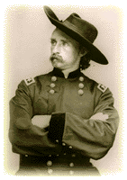
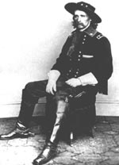
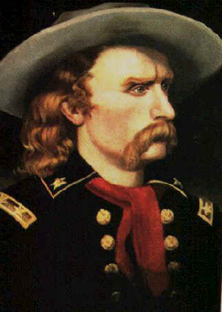

|  |
| George A.Custer was born in New Rumley, Ohio in 1839. In 1853 Custer was entered into Alfred Steblin's ‘Young Mens’ academy. In 1855 he returned to teach at Beech Point School. Later in 1857 George Custer entered West Point. He graduated in 1861 at the bottom of his class. |
|
Civil War
At the start of the civil war he was an aid-de-camp
for both General McClellan and General Plearsonton. Once Autie as he was
nicknamed from childhood, was ordered to cross a creek. After Custer crossed
the creek he spotted an enemy picket post. George then crossed back over,
and asked permission if he could lead an attack on the enemy. The following
morning Custer lead an attack on the picket post. He drove back the enemy,
and captured some of the first colors of the Army of the Potamac. Custer
fought in many of the civil war battles. He fought at Peninsular, Anetam,
and Chancellorsville. |
| In June 1863 Custer was promoted to Brigadier General at the age of 23 making him the youngest Brig. Gen. of the war. After he was promoted he took command of the Michigan Cavalry Brigade. With this command Gen. Custer fought at Gettysburg, where he helped keep Gen. Stuart from turning the left flank. He also fought at Bristoe and Mine Run. Custer was with Gen. Sheridan when he led a cavalry raid on Richmond. At the battle of Yellow Tavern the colors were only saved by Custer hiding them in his shirt and fleeing. At the battle of Woodstock George drove his former classmate General Rosser back 26 miles and captured everything on wheels except one gun. At the end of the war Custer’s command had the highest casualty rate of any other officer. |
|
After the Civil War.
In 1866 Gen. Custer applied for a leave of
absence to command the Mexican Cavalry under Benito Juorez. He was denied.
Custer was sent to Texas for several months. He was under the command of
General Hancock. Custer though himself a ‘public hero’, which made him hard
to control. |
|
The 7th Cavalry
After the civil war Custer was assigned to
the new 7th cavalry at the rank of Lt. Col. Once while on patrol he lost
a group of men and never bothered to look for them. Those men were found
and killed by Indians. At one time he ordered some men to find and shoot
a group of deserters. Later he left his command at Fort Wallace so
he could see his wife. For these actions he was arrested and court marshaled.
Lt. Col. Custer was found guilty, and was suspended for 1 year without pay. |
 |
| After 10 months had gone by Gen. Sheridan reinstated Custer. After his reinstatement he fought at the battle of Washita. Custer considered this to be a great victory. In 1876 The Lt. Col. was assigned to follow General Alfred H. Terry. Custer was sent up the Rosebud River to locate the Indians. After finding the Indians he was to wait on reinforcements. Including two gatling guns and a larger group of cavalrymen. Instead he decided to attack. Not knowing he was outnumbered by Crazy horse, Gall and hundreds of other Indians. He split his forces three ways. One group went with Maj. Reno and another with Cap. Benteen. They were to flank to the outside so less Indians would escape. Custer led his group straight into the camp of Indians. Custer and all 264 of the men that went straight into the camp were killed. |
|
Mrs. Libbie Custer
After George was killed Mrs. Custer started
writing for extra money. She wrote several books. Two of them were Following the Guidon(1890), and
Tenting on the Plains
(1893). “Libbie” as Custer called her was always with her husband when ever
possible. Of the time they spent together on the plains she survived prairie
fires, an earthquake, mutiny of the men, and an epidemic of cholera. Elizabeth
spent the last 52 years of her life protecting and defending her husband’s
reputation. Elizabeth Custer died at age 90, just two days short of 91 years
old.“I was the
only officers wife who always followed the regiment.”Elizabeth Custer.
|
|
The Battlefield today.
Today you can go see the Battlefield in Montana.
Its name has changed several times. In 1846 the name was changed to Custer
Battlefield National Monument. Later in 1991 it was changed to Little Bighorn
Battlefield National Monument. You can also go see the Custer Battlefield
Museum |
|  |
Fort Wallace and Lt. Col. Custer
Fort Wallace was founded in 1866. It
was located along the Smoky Hill trail. It was there to protect the stage
route between Atchison and Denver. In 1867 Fort Wallace was considered the
center of conflict. In the spring of 1867 the
7th Cavalry was sent to Fort Wallace. Custer was angry about the news in
his wife’s letters. He often took out his anger on his men and officers. Captain Albert Barnity wrote “You would be filled
with utter amazement if I were to give you a few instances of his cruelty
to the men and the discourtesy to the officers.
|
| In June Custer was assigned to lead an expedition along the Republican River. He instantly made plans to meet Libbie at Fort Wallace where a squadron would bring her to him. Instead of traveling to Fort Sedgwick for supplies and new orders he sent men back to Fort Wallace. Libbie however was not there. He then moved west into Colorado to search for Indians even though the sign showed that the tribe had moved east into Kansas. The march was long and hard on both men and horses. At the end of July the column moved into Fort Wallace. |
| Custer became obsessed with seeing his wife. He forced a march to Fort Harker. He was so preoccupied that he didn’t bother to search for a detail of men that went looking for his lost mare. He finally arrived at Fort Riley by train. Custer’s commanders had him arrested. The charges were absence without leave, and use of government equipment for private business. He was found guilty, and was suspended without pay for 1 year. |
| “In years long numbered
with the past, when I was merging upon manhood my every though was ambitious-
not to be wealthy not to be learned but to be great. I desired to link, as
to be a mark of honor not only to the Present but to the Future generations.”
George A. Custer, 1867 |
| Randy
McCune Rossville Junior High
2002 Plains Project |